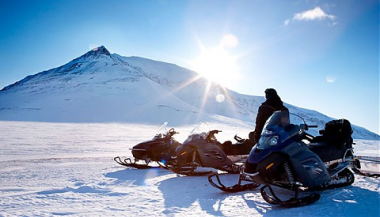

Зимбабве
 от 118 112 ₽
от 118 112 ₽
Италия
Сансеполькро — (Перуджа) — Ассизи — Губбио — (Сиена) — Ла Верна — Ангиари — Монтерки — Ареццо — Кортона — (Пиенца) - (Монтепульчано)
8 дней / 7 ночей Русский язык
27.04.19 - 04.05.19 и еще 15 дат
 140 715 ₽
140 715 ₽
ИСЛАНДИЯ
Рейкьявик — Тингвеллир — Гюдльфосс — Скафтафедль — Сельяландсфосс — Скоугафосс — Йёкюльсаурлоун — Голубая Лагуна — Снайфельсйёкутль — Arnarstapi — Рейкьявик
8 дней / 7 ночей Русский язык
27.04.19 - 04.05.19
 37 302 ₽
37 302 ₽
ТУРЦИЯ
Стамбул — Анкара — Каппадокия — Конья — Памуккале — Эфес — Кушадасы — Пергам — Ассос — Троя — Стамбул
8 дней / 7 ночей Русский язык
28.04.19 - 05.05.19 и еще 3 даты

145 000 ₽
НОРВЕГИЯ, ШПИЦБЕРГЕН
Рейкьявик — Тингвеллир — Гюдльфосс — Скафтафедль — Сельяландсфосс — Скоугафосс — Йёкюльсаурлоун — Голубая Лагуна — Снайфельсйёкутль — Arnarstapi — Рейкьявик
8 дней / 7 ночей Русский язык
27.04.19 - 04.05.19 и еще 15 дат